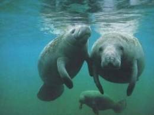
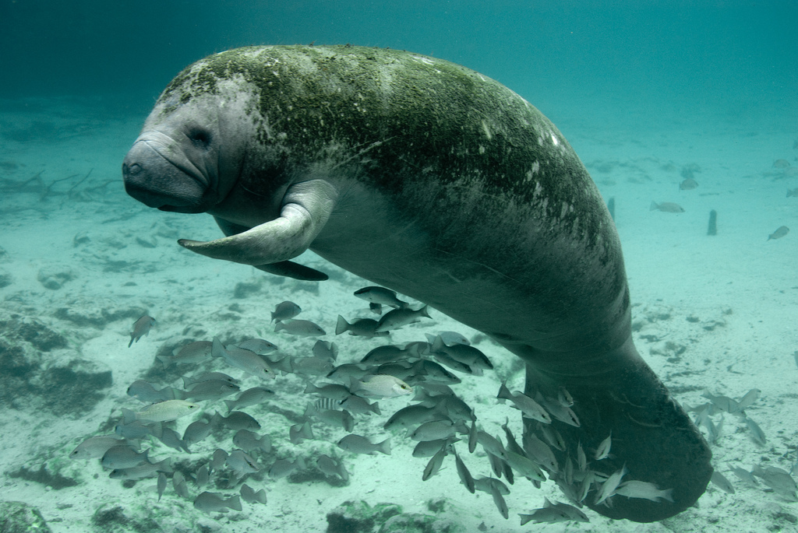
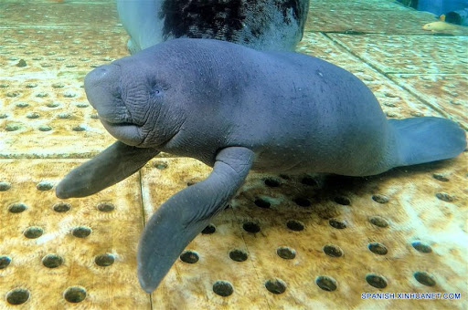

| Especie. | Descripción. | Característica | Imagen. |
| Manatí del Amazonas (Tichechus inunguis). | Este mamífero acuático es el único triquéquido que habita exclusivamente las aguas dulces de América del Sur. Es también la única especie de manatí desprovista de uñas en las aletas pectorales, y he ahí el origen de su nombre científico, pues inunguis significa en latín “sin uñas”. Pertenece al orden Sirenia y al género Trichechus a cuyos miembros también se les denomina vacas marinas. | De las tres especies reconocidas, Trichechus inunguis es la más pequeña y delgada. Alcanza una longitud de hasta 2.8 metros y un peso de hasta 540 kilogramos, pero las hembras tienden a ser más grandes que los machos. Su piel es fina, arrugada y escasa de pelo, aunque mantiene las características vibrisas en la superficie del hocico. Algunos estudios sugieren que los manatíes pueden detectar los cambios en la presión del agua a través de estos pelos sensoriales. Una característica distintiva es su coloración, que si bien, se trata de gris oscuro, bajo algunos ángulos y en sincronía con la luz natural, puede lucir negro. La zona inferior del cuerpo exhibe un extenso manchón blanco que lo distingue fácilmente de sus homólogos de África y las Antillas. Su cuerpo parece alargado, con una cabeza redondeada y una cola aplanada con un borde redondeado. Carece de extremidades traseras así como de uñas y el borde de las aletas puede mostrar partes blancuzcas. |  |
| Manatí antillano (Trichechus manatus). | Esta especie de manatí a menudo es llamada manatí antillano, manatí del Caribe o simplemente manatí, aunque en inglés su nombre común es West Indian manatee, traducido como manatí de las Indias occidentales. Es una especie bien diferenciada de los ejemplares de África y del Amazonas, pero con base en análisis genéticos y morfológicos, en 1986 fue separada en las subespecies Trichechus manatus manatus (manatí antillano o del Caribe) y Trichechus manatus latirostris (manatí de Florida). | De aspecto corpulento, el manatí mide entre 2.7 y 3.5 metros de longitud y pesa entre 200 y 600 kilogramos, siendo el manatí de Florida más grande que el manatí del Caribe pero en general, la hembra más grande que el macho. Su cuerpo robusto se afina a medida que da paso a la cola. Ésta se describe como una estructura redondeada y aplanada semejante a un remo. Posee dos aletas pectorales planas con 3 o 4 uñas pero ninguna extremidad trasera. Su piel gris o marrón es dura y se cubre con una pequeña cantidad de pelos cortos mientras que el hocico presenta vibrisas. |  |
| Manatí africano (Trichechus senegalensis). | Es la única especie de triquéquido que se encuentra en el Viejo Mundo y a la vez, es la especie de sirenio menos conocida. Su reconocimiento como especie sucedió en el año 1795, cuando el naturalista alemán Johann Heinrich Friedrich Link anunció que Trichechus senegalensis era oficialmente una especie. Hasta el momento, se desconocen subespecies. Su nombre alterno es manatí de África occidental. | La apariencia externa del manatí africano es similar a la del manatí antillano, aunque ambos presentan diferencias significativas en relación con el hocico, la posición de los ojos y los huesos del cráneo. Posee un cuerpo hidrodinámico y robusto en el medio que se estrecha hacia la cola, ésta es redondeada y con forma de paleta. Es ligeramente más delgado que Trichechus manatus, asimismo, su hocico es más romo y sus ojos más sobresalientes. Tiene un par de aletas pectorales en cuyos extremos se encuentran uñas. Su piel gris puede presentar una tonalidad verdosa o marrón debido al crecimiento de algas en su superficie. La textura es rugosa y exhibe pelos cortos y ralos que se vuelven rígidos en la zona de los labios. |  |